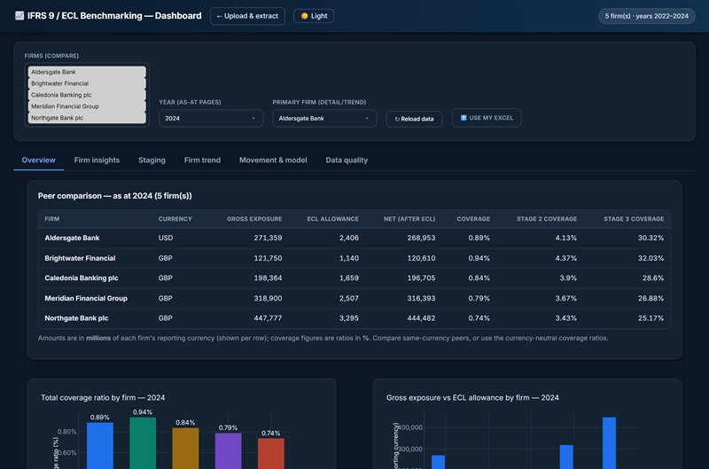
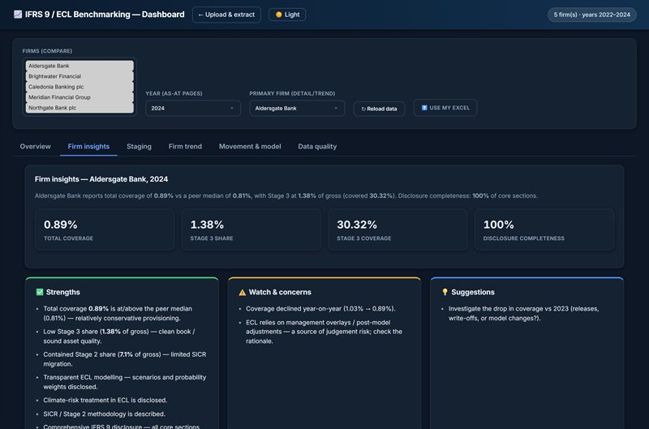
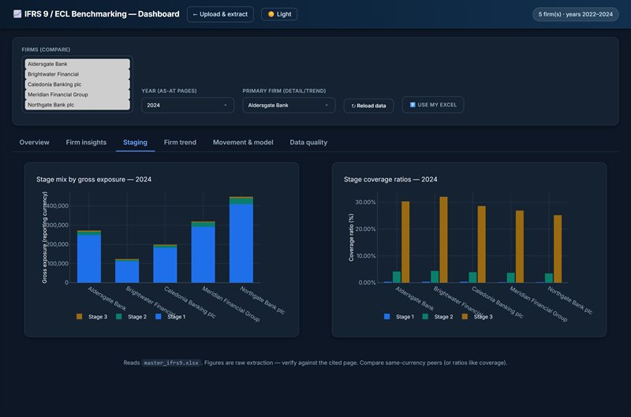
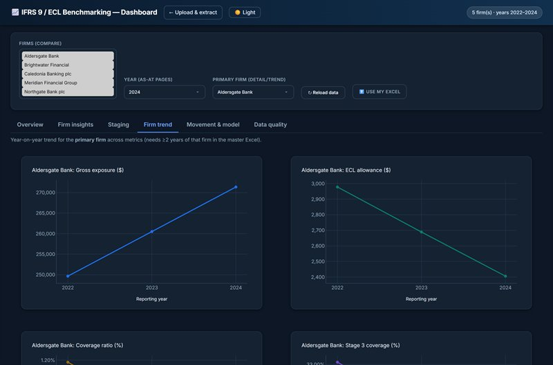
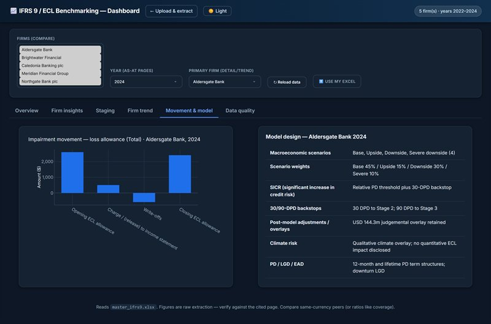
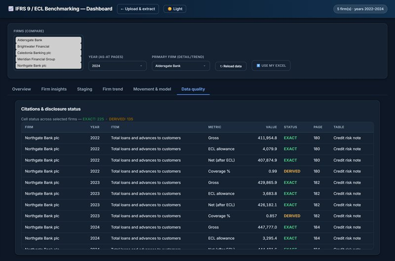

Open source · IFRS 9 · Disclosure benchmarking
IFRS 9 / ECL Peer Benchmarking
Turns ten banks' annual reports into a cited, analyst-ready IFRS 9 benchmarking set — without inventing a single figure.
Annual reports run to roughly 300 pages each, and the IFRS 9 disclosures an analyst actually needs are scattered through them. This tool ingests up to ten firms' PDFs and extracts five subsections per firm — core ECL and coverage, the staging table, impairment movement, model design (scenarios and weights, SICR, 30/90-DPD backstops, PMAs and overlays, climate, PD·LGD·EAD) and disclosure notes — then produces a browsable site, a consolidated PDF and a Power BI-ready master Excel.
The engineering is in the guardrails. Text is extracted layout-preserving, so multi-column tables don't collapse into ambiguous number streams. Retrieval narrows ~500 pages to the ~9 most relevant per section before anything reaches the model. A numeric value is kept only if its digits literally appear on a supplied page, and its citation is re-pointed to the page that actually contains it. Every figure carries a printed-page citation and a status flag — EXACT, PROXY, DERIVED or NOT DISCLOSED — and anything absent is listed rather than invented. Currency and units are detected per firm, and the approach was validated against five real bank annual reports. The dashboard below is shown with illustrative demo data for fictional peer banks — a live run extracts from real annual reports.





